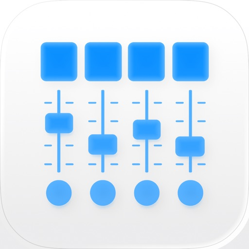

I signed in with Apple and hid my email
Include the relay address shown in your Apple ID settings (Sign in with Apple › The Multitrack Player), so we can find your account.

The Multitrack PlayerAccount
How to delete your The Multitrack Player account and its data, on iOS and Android.
Your account, your profile on our servers, and that account's multitracks, recordings and settings on the device are deleted right away.
Write from your account's email address (the one you use with Google or Apple) with the subject Delete my account:
multitrack-player-app@outlook.com
We delete your account, your profile and your conversations with the developer within 30 days and confirm it by email. You can also ask us to delete only your conversations with the developer.
Include the relay address shown in your Apple ID settings (Sign in with Apple › The Multitrack Player), so we can find your account.
Your account and sign-in credentials, name, email address, user ID, your profile, and your conversations with the developer (messages and images).
They never leave your device, so they are not on our servers. Uninstalling the app removes them.
Crash reports (up to 90 days) and analytics, no longer linked to your account. Purchase records are kept by Apple, Google and Adapty only as long as billing and the law require.
No. Cancel it in your App Store or Google Play subscription settings.
More details in our Privacy Policy.